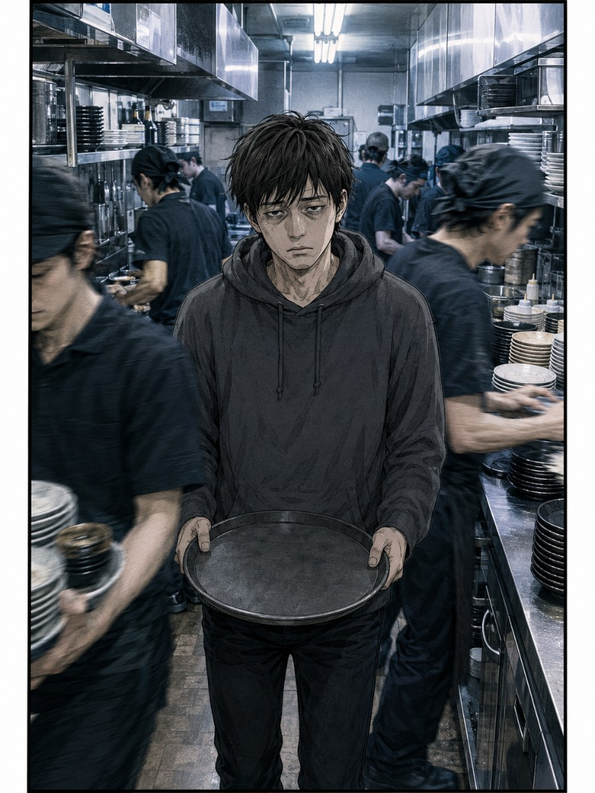
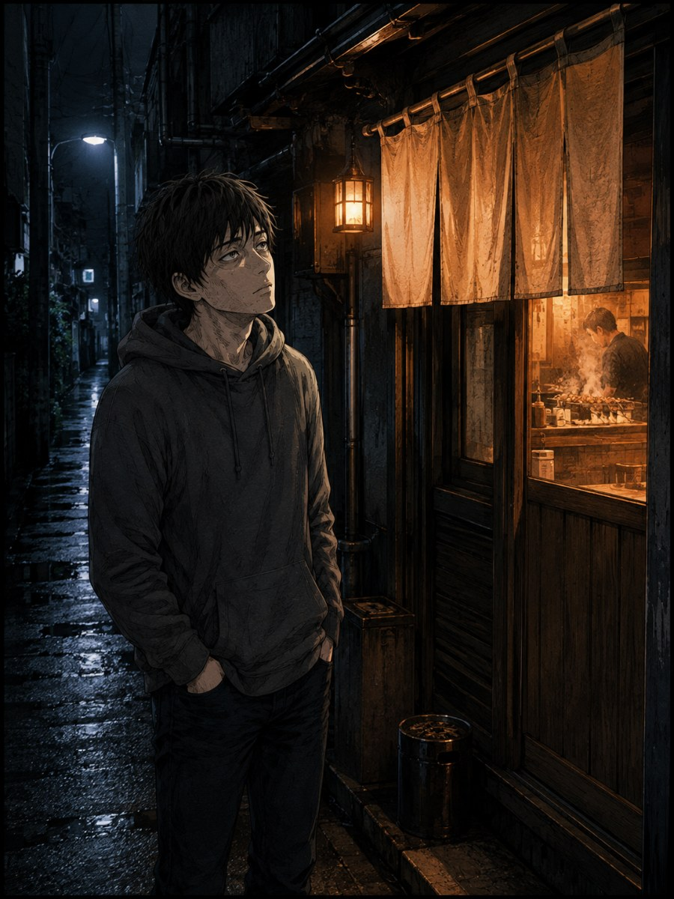
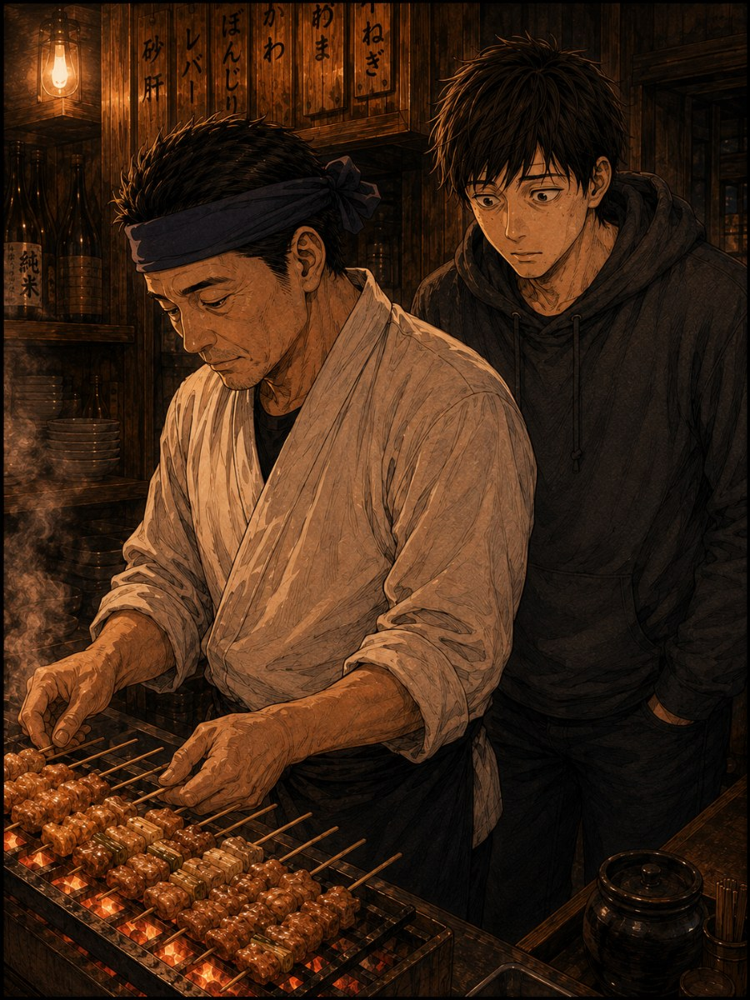
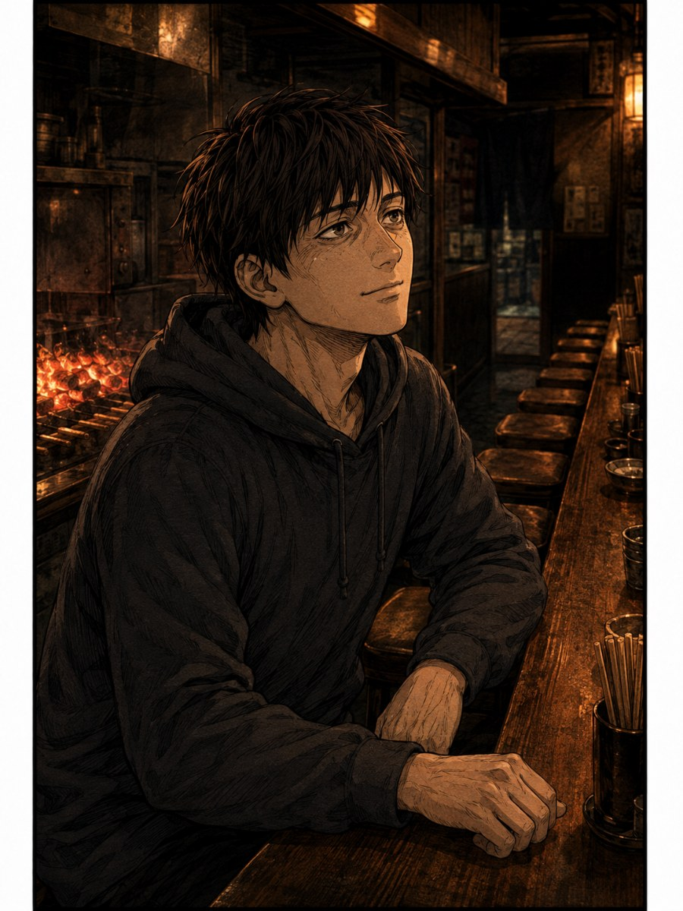

STAFF WANTED｜スタッフ募集
炭火焼鳥 とりき
カウンター8席の、小さな焼鳥屋です。
MASTER
大将
40代・男性｜白い作業着と手ぬぐい
都内の老舗で修業したあと、この街に店を構えました。
「顔を覚えていたいから、カウンター8席にした」という人です。あまり多くは語りませんが、人の面倒を見ることには時間を惜しみません。
新しく入った人に最初の1ヶ月、焼き場に立たせないのは、大将が決めたルールです。
COMIC




REASON
最初の1ヶ月、焼き場に立たせない
入ってすぐ現場に放り込む、ということをしません。仕込みと洗い物をしながら、大将が焼くのを横で見ることに1ヶ月使います。焼き方を"見て覚える"時間を、ちゃんと用意しています。
怒られたことがない、と言われる現場
お客さんから「怒られたことがない」「分からないことを聞きやすい」とよく言われます。スタッフにとっても、同じ環境です。
ここで覚えた技術は、次でも使える
以前辞めたスタッフが「ここで覚えたことは次でも使える」と言って店を出ました。大型店の流れ作業とは違う、ちゃんと手に残るものを身につけられる場所です。
VOICE
怒られたことがない
— お客さんによく言われること分からないことを聞きやすい
— お客さんによく言われること焼けるようになるまで待ってもらえたから
— 3年在籍のスタッフの口ぐせここで覚えたことは次でも使えますから
— 以前のスタッフが店を出るときに言った言葉
カウンター8席の小さな焼鳥屋です。
名前を覚えてから、一緒に働きましょう。
応募・お問い合わせ先：○○